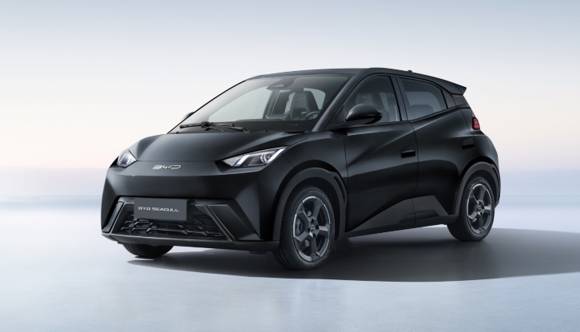

Servicios
Los servicios que brindamos estan pensados para ofrecerte, seguridad y confianza al momento de alquilar un vehiculo. Contamos con diferentes tipos de autos y beneficios adicionales que se ajustan a tus necesidades.
"Ofrecemos movilidad a tu medida, con vehiculos modernos y un servicio de excelencia."
Nuestros vehiculos
- Autos compactos: Ideales para moverte con agilidad por la ciudad. Tienen bajo consumo de combustible, tamaño practico y son faciles de estacionar. Perfectos para viajes cortos o desplazamientos diarios.
- SUV familiares: Espaciosas, comodas y seguras. Pensadas para quienes viajan con la familia o necesitan un maletero amplio. Cuentan con aire acondicionado, GPS y sistemas de seguridad avanzados.
- Camionetas 4x4: Perfectas para aventuras fuera de la ciudad o terrenos dificiles. Potentes, resistentes y con traccion total, para garantizarte estabilidad sin importar el camino.
- Vehiculos electricos: Nuestra opcion mas ecologica. Cero emisiones, bajo mantenimiento y autonomia suficiente para recorridos urbanos. Incluyen cargador portatil y acceso a puntos de carga rapida en toda la ciudad.



Detalles adicionales
- Seguro:
- Para todos nuestros vehiculos debes contratar un seguro con cobertura total por un costo extra minimo. Queremos que manejes con la tranquilidad de estar completamente protegido.
- Atencion 24h:
- Ofrecemos asistencia vial las 24 horas, los 7 dias de la semana, en todo el territorio nacional. Si tienes una emergencia, una llanta pinchada o una falla mecanica, solo debes llamar a nuestra linea gratuita y un tecnico acudira de inmediato a ayudarte.
- Entrega y devolucion:
- Puedes recoger tu vehiculo en cualquiera de nuestras sucursales y devolverlo donde mas te convenga.
- Quito
- Guayaquil
- Cuenca
Nuestras sucursales se encuentran en:
¡Haz clic en reservar y adquiere tu vehiculo facilmente!